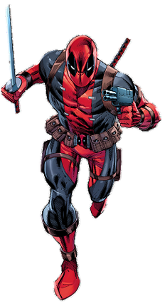

Iron Man
Тоні Старк - технологічний геній, мільярдер і інженер, який використав технологію для суперсили. Засновник Месників.
Повний профіль
Captain America
Стів Роджерс - символ годності, дисципліни та несіхтруваної волі. Суперсолдат і лідер Месників у найлвых битвах.
Повний профіль
Thor
Бог гром з Асгарду. Тор пройде шлях від самзаваодиваного принца до вдумливого робинка світів. Його сила ровяно спасала Всесвіт.
Повний профіль
Spider-Man
Пітер Паркер - приязний сусід й герой Ню-Йорка з великим серцем. Кукус радіоактивної навки трох його лютину.
Повний профіль
Hulk
Брюс Бэннер - вчений, в якому живе одна з найможнивіших сил у Всесвіті Marvel. Руйнівна могутність для захисти світу.
Повний профіль
Ant-Man
Скотт Ленг - містер злой та герой, який володіє могутністю людяр в міро. Йоги хитрість і ловкість - страчев гонашення.
Повний профіль
Captain Marvel
Керол Данверс - пілот ɧ космічною силою, захисница Земл та віддалених світів. Одна з найсильніших героїн Marvel.
Повний профіль
Deadpool
Уейд Уілсон - uнаїмник ɧ червоним костюмом, остромиттю та регенерацією. Ёго гумор скриває сильний боєвий дух.
Повний профіль
Professor Xavier
Чарльз Ксав'єр - телепат і засновник школи для обдарованих мутантів. Вдумливий лідер у боротьбі за мир між людьми та мутантами.
Повний профіль
Cyclops
Скотт Саммерс - бойовий лідер X-Men з магнум лазерним поглядом. Його тактика і данність команді спасали світ деміж по рази.
Повний профіль
Storm
Оророр - королева погоди, моглива контролювати стихії. Вдумлива та магна королева, борець за справедливість.
Повний профіль
Wolverine
Логан - легендарний воїн з адамантовими когтями і спроможністю до регенерації. Суровий боєць з великим серцем.
Повний профіль
Jean Grey
Джін Грей - могутній телекінетик і телепат з явищем Фенікса. Одна з найсильніших мутантів X-Men.
Повний профіль
Beast
Генк Маккой - вчений та боєць, що володіє звіриною силою. Розумний і сильний член X-Men з синьою шерстю.
Повний профіль
Star-Lord
Пітер Квіл - лідер Стражів Галактики, космічний авантюрист. Його витяги та тактика рятують галактику від загроз.
Повний профіль
Gamora
Гамора - найнебезпечніша жінка галактики, боєць з величезним серцем. Майстер бойових мистецтв і вірна бойовик команди.
Повний профіль
Drax
Дракс Руйнівник - могутній боєць з жагою справедливості. Його силі та простодушному гумору нема рівних.
Повний профіль
Rocket
Ракета - генетично модифікований єнот, тактик та інженер. Малий розміром, але величезний характером та розумом.
Повний профіль
Groot
Грут - деревоподібний гуманоїд з планети X. Його фраза 'Я Грут' приховує глибоку мудрість та вірність друзям.
Повний профіль
Nebula
Небула - кібернетично посилена боєць, що шукає спокути. Знайшла сім'ю та мету у Стражах Галактики.
Повний профіль
Mr. Fantastic
Рід Річардс - геній та лідер Фантастичної четвірки. Його винаходи та тактика рятували Всесвіт багато разів.
Повний профіль
Invisible Woman
Сью Шторм - королева здібностей і серце сім'ї. Невидимість і силові поля - це лише початок її влади.
Повний профіль
Human Torch
Джонні Шторм - вогняний боєць і весельчак сім'ї. Контролює полум'я та політ, приносячи вогонь у бойові дії.
Повний профіль
The Thing
Бен Грімм - могутній боєць, трансформований у кам'яного гіганта. Серце та сила сім'ї в одній персоні.
Повний профіль